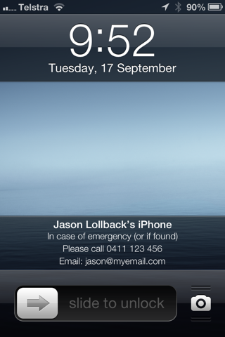

My daughter found an iPhone 5, sitting abandoned on a park bench while we were out for a walk one evening.
Looking at the phone I was pleased to see that the owner had been security minded and had setup a 4 digit passcode, preventing any evil wrongdoing by anyone who happened to find their lost phone.
It turns out that having a passcode is less common than I thought, during the iPhone 5S launch while demonstrating the new fingerprint sensor Phil Schiller stated:
“In our research about half of all smartphone customers do not setup a passcode on their device and they really, really should.”
This is good advice, but the problem I encountered was that having a passcode meant that there was nothing I could do to identify the phone’s owner, all that could be done was to report to the carrier that I’d found a phone belonging to one of their customers.
Thankfully, once the owner realised that he’d lost his phone, he called his own number and we arranged to meet.
The easiest way to avoid this problem is to have your contact/emergency details on your iPhone’s lock screen.
To do this I use Contact Lockscreen Info, which I’ve used to create an image for my lockscreen that includes my wife’s mobile number and my email address.

This has me covered for both an emergency contact or if I’ve lost my phone and it’s found by someone inclined to do the right thing and return it to me. I also have my iPhone and iPad set to use Find My Phone service.
Having your contact/emergency details on your phone will make it easier for somebody trying to help reunite you with a lost phone, having a passcode enabled on iPhones and iPads is essential, at least until we’re all using devices with fingerprint sensors.